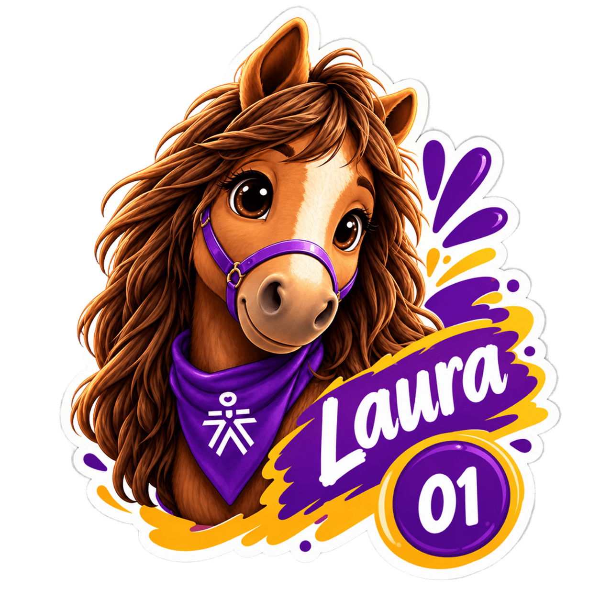
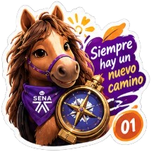
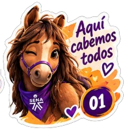

Tarjetón 01 · Una candidatura hecha entre aprendices
Aprender.
Conectar.
Dejar huella.
Seis ideas para que nuestra etapa en el SENA se sienta más acompañada, participativa y nuestra.
Vota por #01!!01


EL SENA
02 / El enfoque
Escuchar para conocer.
Conocer para mover.
La ruta es simple: escuchar, proponer, gestionar y generar cambios positivos. Las ideas fortalecen la participación, el bienestar y el sentido de pertenencia, sin prometer lo que depende de permisos o alianzas.

tiene algo que
enseñar.”
03 / Seis movimientos
Ideas que
se activan.
Propuestas breves para conocernos, participar y aprovechar mejor las oportunidades del SENA.
01SENA SIN LÍMITESAprender no tiene que limitarse a lo que estudias.+
Objetivo: compartir talentos y animarnos a probar algo nuevo.
- De Aprendiz a Aprendiz: intercambiar inglés, diseño, Excel, cocina o video.
- Reto de lo nuevo: descubrir actividades, talentos y hobbies fuera de la rutina.
- Conexión 360°: votar temas y encontrarnos para conversar y aprender.
Viable con participación, permisos y articulación con las áreas correspondientes.
02PASAPORTE SENANo solo estudies en el SENA. Vívelo.+
Objetivo: convertir las oportunidades del Centro en experiencias que dejen huella.
- Proponer rutas voluntarias por servicios, cultura, deporte y oportunidades.
- Registrar cada experiencia con un sello, punto o insignia.
- Reconocer simbólicamente las rutas completadas.
Requiere validar herramienta, reconocimientos y operación institucional.
03SENA CON HUELLASNo necesitamos hacer grandes cosas para dejar grandes huellas.+
Objetivo: fortalecer solidaridad, apoyo entre aprendices y uso responsable de recursos.
- Cine con Propósito: encuentros y donaciones para iniciativas sociales o de protección animal.
- Cadena de Favores: compartir apuntes, materiales, orientación y conocimientos.
- Segunda Oportunidad: intercambiar libros, útiles y elementos de formación.
Aportes, frecuencia y alianzas requieren acuerdos y autorización.
04RUTA APRENDIZQue llegar al SENA no sea un obstáculo.+
Objetivo: gestionar alternativas para quienes tienen dificultades para desplazarse.
- Identificar necesidades reales de movilidad.
- Gestionar bonos, tiquetes o subsidios ante alcaldías y entidades.
- Hacer seguimiento y priorizar a quienes más lo necesiten.
No es una garantía: depende de diagnóstico, presupuesto y respuesta externa.
05IMPULSAR LO QUE TENEMOSHacer crecer lo que ya funciona.+
Objetivo: evitar que buenas iniciativas y oportunidades pasen desapercibidas.
- Dar visibilidad a convocatorias, actividades y programas existentes.
- Acompañar iniciativas para lograr continuidad y participación.
- Recoger mejoras sin reemplazar lo que ya funciona.
Depende de coordinar canales, responsables y continuidad con el Centro.
06SENA SIN PUERTASEl conocimiento no se queda dentro de cuatro paredes.+
Objetivo: acercar el SENA a la comunidad con experiencias prácticas y breves.
- Crear una Caja de Experiencias SENA con apoyo de distintas formaciones.
- Llevar actividades y oportunidades a espacios de la comunidad.
- Involucrar aprendices como facilitadores, no solo como informadores.
Depende de viabilidad, parámetros de SENA en la Comunidad, aliados, permisos y recursos.
